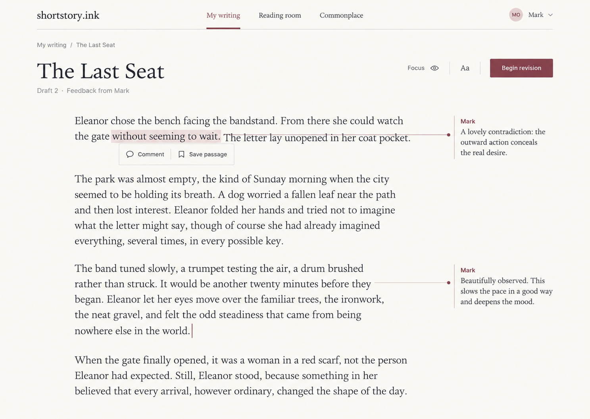
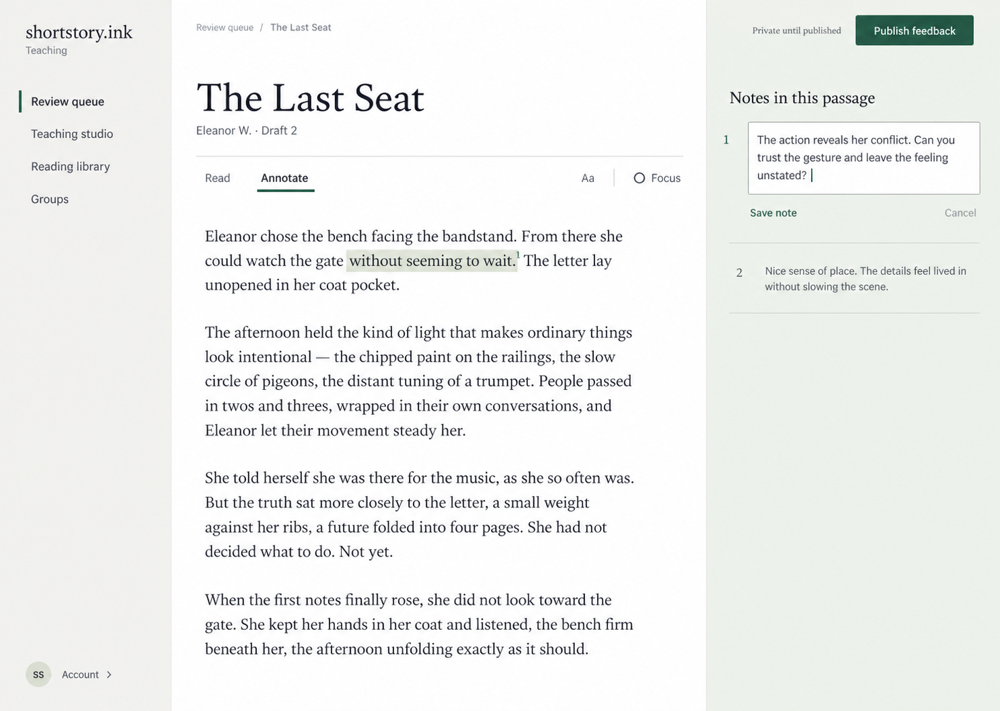
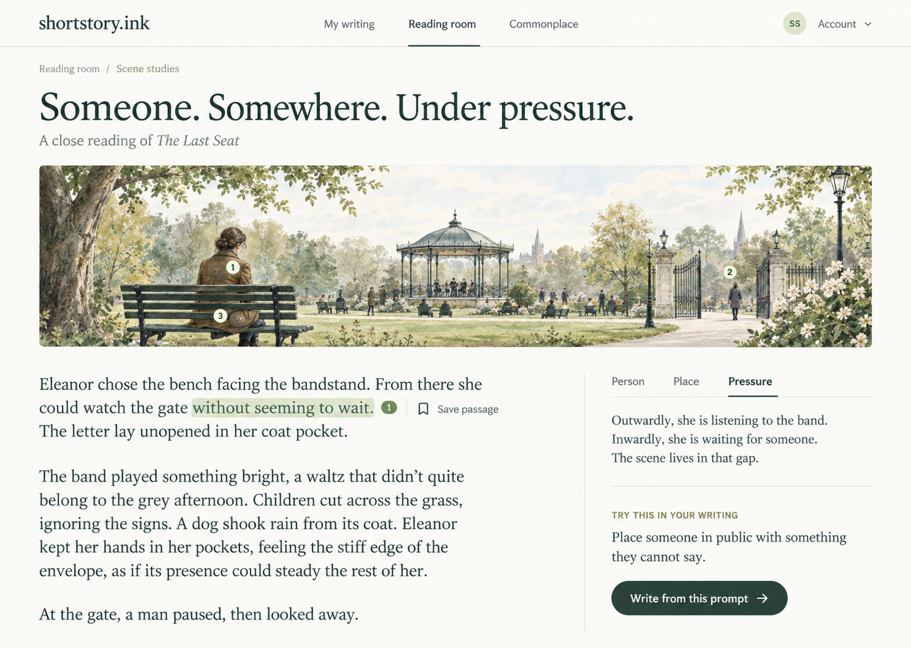

Option 1
The Literary Journal
A quiet reading surface with feedback beside the text.

Option 2
The Editorial Desk
A clear teaching workspace with an editable notes margin.

Option 3
The Reading Garden
An illustrated scene study that leads into a writing prompt.
